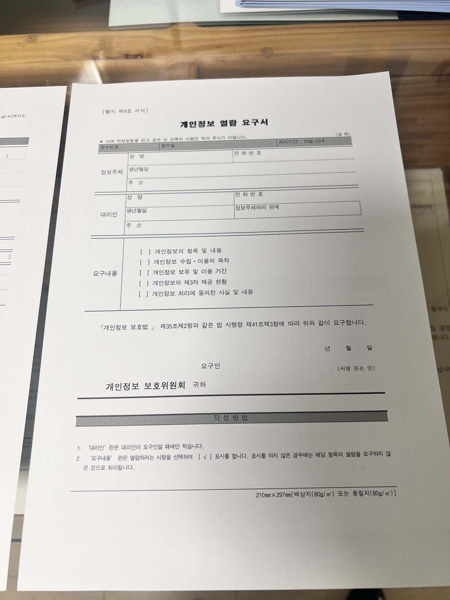

"Isn't a fine the end of it — it's a criminal penalty, right?" No. Quite apart from the penalty imposed by the prosecution and the court, immigration reviews the same case again. And if the fine amount and the type of offence cross the thresholds, it issues a removal disposition. Those thresholds are not vague. Below, we set out exactly where the line falls.

Isn't a fine the end of it as a criminal penalty?
The criminal process and the immigration process run separately.
When a fine becomes final in court, the result is passed to immigration. Immigration then re-decides, on the same case, "should this person be allowed to keep residing here?" This is the immigration violation review (사범심사).
So it is too early to relax just because the case ended in a fine. A removal measure can follow separately from the criminal penalty. What matters is the amount and the type of offence. We look at where the line is drawn, in turn.
Departure order, compulsory deportation, removal — what's the difference?
"Removal" is the umbrella term for measures that send a person out of Korea. It is enforced in two ways.
A departure order (출국명령) is the lighter disposition that gives you the chance to leave on your own. You are not held in a detention center; you depart yourself within a set deadline.
A compulsory deportation (강제퇴거) is forced removal. It brings detention, escorted transfer onto a flight, and a long-term re-entry ban. A sentence of imprisonment or heavier makes you subject to compulsory deportation. Even for the same "removal," how it is enforced shapes everything that follows.
| Item | Departure order | Compulsory deportation |
|---|---|---|
| Nature | Chance to leave voluntarily | Forced removal |
| Detention | None | Held in a detention center |
| Re-entry ban | 1–5 years | At least 5 years; permanent for serious crimes |
| Future visas | Room to re-apply | Blocked for a long period |
From what fine amount are you subject to removal?
Immigration treats a foreigner who has received a fine as subject to removal where any of the following applies.
- A first offence sentenced to a fine of ₩3 million or more
- Fines totalling ₩5 million or more within the last 5 years
- Two or more fines within the last 2 years, or three or more within 5 years
- A traffic-related fine of ₩5 million or more
- A fine for drug or sexual offences, etc. — a departure order regardless of number or amount
This is where the numbers get confusing. The line differs: ₩3 million for a first offence, ₩5 million for cumulative and traffic cases. For drug and sexual offences, the amount is not counted at all.
| Category | Criterion |
|---|---|
| First offence | Fine of ₩3M or more |
| Cumulative (5 yrs) | Fines totalling ₩5M or more |
| Frequency | 2+ in 2 yrs / 3+ in 5 yrs |
| Traffic-related | Fine of ₩5M or more |
| Drug / sexual offences, etc. | Regardless of amount or count (departure order) |
Crossing a threshold does not automatically fix the outcome. The reviewing officer also looks at whether it is a first offence, whether you have family in Korea, how long you have lived here, and whether a settlement was reached. How those circumstances are organized and presented can turn a compulsory deportation into a departure order.
Which crimes are "serious crimes"? (permanent entry ban)
Serious crimes are not about the amount. For offences immigration classifies as serious, even a disposition as light as a suspension of indictment can lead to removal together with a permanent entry ban.
- Insurrection and treason
- Murder; rape and indecent acts; robbery
- Violations of the Act on Special Cases Concerning the Punishment of Sexual Crimes
- Violations of the Narcotics Control Act
- Violations of the Act on the Aggravated Punishment of Specific Crimes (abduction/inducement, habitual robbery/theft, repeat robbery causing injury, retaliatory crimes, drug offenders)
- Violation of Article 4 of the Punishment of Violences Act
- Violations of the Act on the Control of Public Health Crimes
In addition, immigration also classifies the following as serious crimes.
- Special obstruction of official duties
- Articles 3–15 of the Sexual Crimes Punishment Act; Articles 7–16 of the Act on the Protection of Children and Youth against Sexual Abuse
- Dangerous driving causing injury (Aggravated Punishment Act)
- Voice phishing, messenger phishing, romance scams and similar fraud committed via information and communications networks
- Crimes causing death (excluding negligence and occupational negligence)
In other words, even for the same "fine," if the offence falls within this list it leads to removal and a permanent entry ban regardless of amount.
After the criminal penalty — what happens, and what to do
Once the fine is final, the case moves to immigration. The immigration office calls the person in for an examination (the status review). The result of that examination decides whether a departure order or compulsory deportation issues.
This examination stage is decisive. A statement made here hardens directly into the basis for the disposition. Once a statement is set, it is hard to reverse later.
With counsel's assistance at this point, your lawyer can attend the immigration examination with you — preventing mistranslation, organizing which circumstances to state and in what order, and preparing supporting evidence. What works in the examination is not a claim that "I never broke the law," but evidence showing that the disposition would be excessive.
| Point to establish | Documents |
|---|---|
| Ties to family in Korea | Family relation certificate, marriage certificate, children's birth/enrolment records |
| Economic settlement | Certificate of employment, employment contract, recent payslips |
| Need for treatment | Medical certificate, treatment plan, doctor's opinion |
| Remorse / preventing recidivism | Letters of appeal, written apology, record of community service |
Once the examination produces a disposition, the clock runs short. An objection to a departure order or compulsory deportation must be filed within 7 days of receiving the disposition. If the objection is dismissed, you file a revocation lawsuit in the administrative court within 90 days. A lawsuit alone does not halt departure, so to stop it you must also apply for a stay of execution.

What if you are taken to a detention center?
In the compulsory-deportation process you are held in an immigration detention center until departure. With movement and contact cut off, it becomes hard to prepare on your own at the very point you need to contest.
Here you can apply for temporary release from detention, which can free you for a limited time before the process ends. Whether it is granted turns on how well you can show there is no flight risk — through your residence, family, and the need to prepare litigation.
Can you return to Korea after removal?
If you leave under a departure order, the re-entry ban is 1–5 years depending on the case. For compulsory deportation it is at least 5 years.
If the case is classified as a serious crime above, it is a permanent entry ban — the way back is closed in principle.
That said, where you have a Korean spouse or a minor child, or need significant medical treatment, re-entry permission may exceptionally be granted even during the ban period. If you are preparing to return, the first step is to confirm the content of your disposition and the length of your restriction.
Frequently asked questions
This article is general legal information and not advice on any individual case. Immigration dispositions vary with the facts and the time, so confirm the judgment for your own situation through a consultation. The criteria for immigration administrative penalties (beomchikgeum) are covered in a separate article.